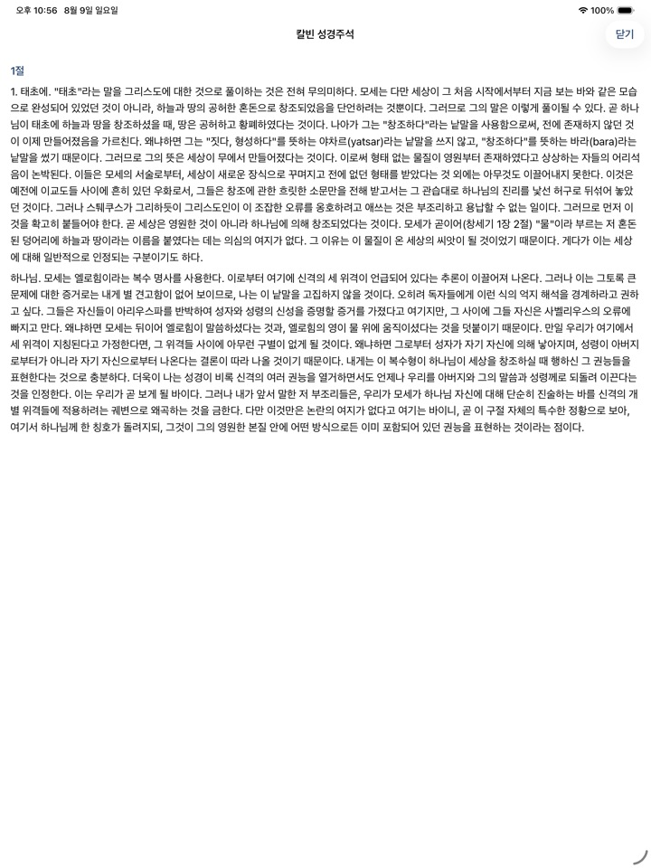
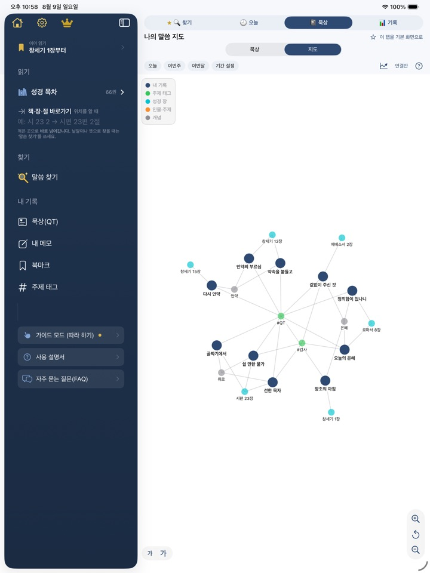
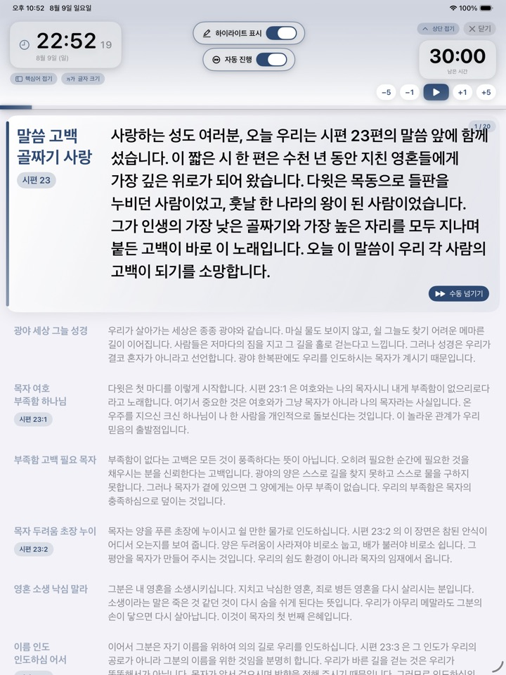
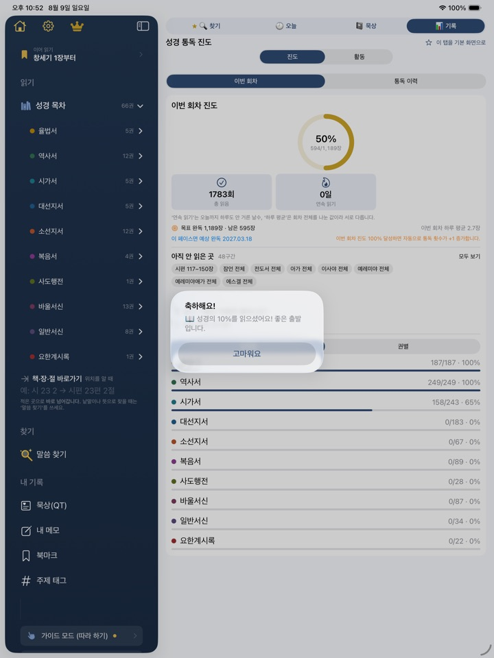
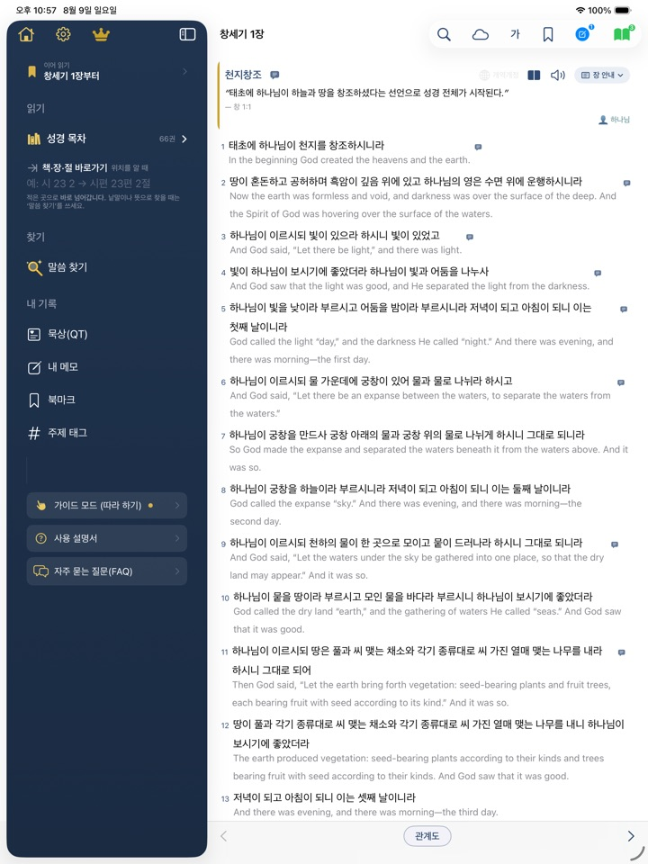
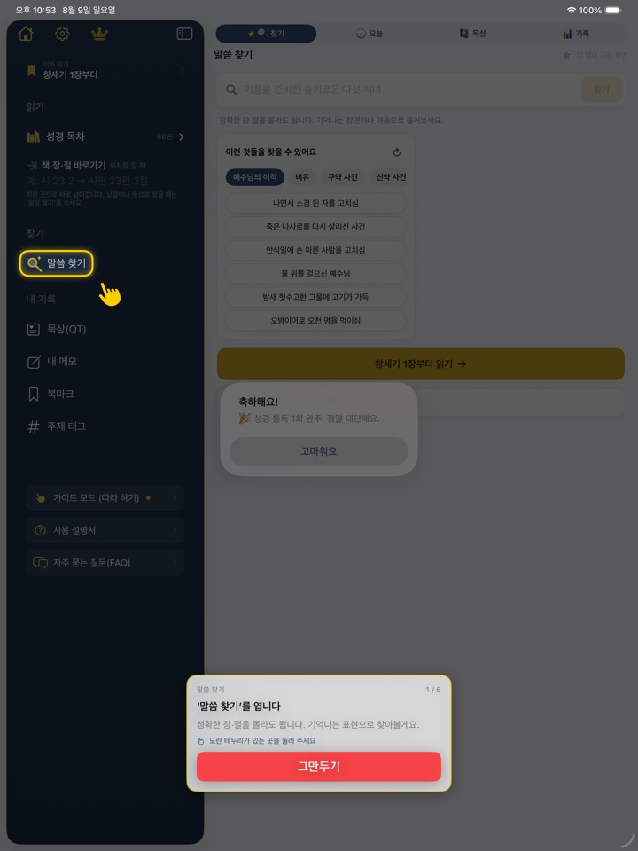
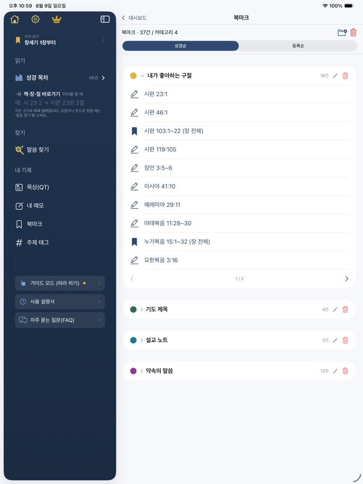
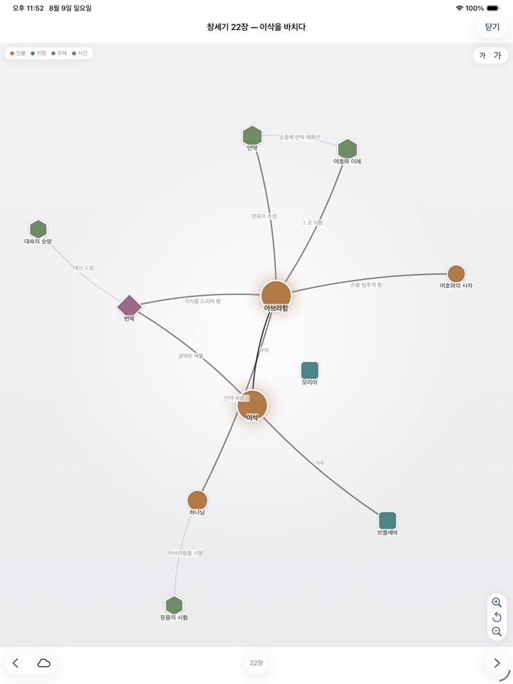

자세한 소개
화면으로 보는 성경갈피
실제 앱 화면 열한 장면입니다. 아이패드 기준이며, 아이폰에서는 같은 기능이 하단 탭과 ‘더보기’로 나뉘어 놓입니다.
01
장과 절을 몰라도 됩니다
앱을 켜면 찾기가 먼저 열립니다. 정확한 장·절 대신 기억나는 장면이나 지금의 마음을 그대로 적으면 됩니다.
무엇을 적어야 할지 막막할 때를 위해 예시를 갈래별로 세 개씩 보여 줍니다. 예수님의 이적 · 비유 · 구약 사건 · 신약 사건 — 하나를 누르면 그 문장으로 바로 찾습니다.
아래에는 최근 찾아낸 말씀과 이어 읽을 자리가 놓여, 어제 하던 일로 한 번에 돌아갑니다.
02
왜 찾아졌는지까지 보여 줍니다
찾는 방식은 세 가지입니다. 단어로(정확히 그 낱말), 확장(비슷한 말까지), 뜻으로(문장 전체의 의미로). 금색 테두리가 쳐진 ‘고급(뜻으로)’이 이 앱의 자리입니다.
결과마다 ‘겨자씨·나무 포함’ · ‘뜻으로 찾음’처럼 근거가 붙습니다. 왜 이 구절이 나왔는지 보이면, 다음에 무엇을 어떻게 물어야 할지도 알게 됩니다.
- 성경 본문과 강해(주석)를 따로 찾을 수 있습니다
- 내 북마크·메모·묵상까지 함께 찾도록 켤 수 있습니다
- 관련도순·성경 순서로 정렬을 바꿉니다
03
칼빈 주석을 한국어 전권으로
본문을 읽다가 절 옆 말풍선을 누르면 그 대목에 대한 종교개혁자 존 칼빈의 설명이 바로 열립니다. 책 서문·장 개론도 같은 자리에 있습니다.
주석은 절 단위로 본문에 이어 붙였습니다. “주석이 있다”와 “그 절을 누르면 그 대목이 열린다”는 전혀 다른 일입니다.

04
내가 쓴 것이 지도가 됩니다
묵상과 메모에 ‘시 23:1’처럼 절을 적거나 #태그, [[개념]]을 쓰면 기록끼리 저절로 이어집니다. 몇 편만 쌓여도 내 관심이 어디에 머물렀는지 한 장의 그림으로 보입니다.
- 내 기록(파랑) — 묵상이나 메모를 한 편 쓰면
- 주제 태그(초록) — 그 글에 #태그를 달면
- 성경 장(청록) — 절을 적거나 그 장에 메모를 남기면
- 인물·주제(주황) — 본문 메모에 그 장의 인물·지명이 나오면 저절로
- 개념(회색) — [[은혜]]처럼 대괄호 두 개로 적으면

05
빈 화면 앞에서 막히지 않게
묵상(QT)은 날짜별 일기입니다. 오늘 읽은 장이 자동으로 붙고, 하루에 여러 편도 씁니다.
템플릿(QT · 설교 노트 · SOAP)을 고르면 말씀 · 묵상 · 적용처럼 칸이 나뉘어 채우기만 하면 되고, ‘미리보기’를 누르면 날짜와 제목, 태그가 붙은 한 편의 글로 보입니다.
태그는 이미 쓰고 있는 주제 태그 중 많이 쓴 것부터 제안합니다.
06
설교 준비부터 강단까지 한 앱에서
원고를 쓰는 편집기와, 강단에서 그대로 펼치는 라이브 모드가 함께 있습니다. 원고 앱과 성경 앱을 오갈 일이 없습니다.
- 지금 읽는 문단이 환하게 표시되고, 나머지는 물러납니다
- 타이머가 남은 시간을 문단에 나눠 잡아 줍니다
- 손으로 문단을 건너뛰면 남은 시간을 다시 배분합니다
- 원고 안의 참조 구절을 누르면 그 본문이 바로 열립니다

07
어디까지 읽었나, 언제 읽었나
읽은 장은 알아서 기록됩니다(원하면 손으로 누르거나, 물어보게 할 수도 있습니다). 같은 장은 하루에 한 번만 세므로 숫자가 부풀지 않습니다.
쌓인 기록은 다섯 가지 그림으로 돌아봅니다 — 막대그래프 · 달력 · 누적 통독 곡선 · 요일별 리듬 · 성경 커버리지. 통독 회차를 여러 번 돌았다면 회차별로 골라 볼 수 있습니다.

08
원어와 다른 번역을 나란히
개역개정 곁에 영어(BSB · KJV · YLT)와 히브리어 · 헬라어 원어를 놓고 읽을 수 있습니다. 두 역본을 한 화면에 나란히 두는 ‘2개 읽기’도 됩니다.
절 번호를 누르면 그 절만 다른 언어로 바꿔 볼 수 있고, 원어에는 스트롱 번호가 붙은 인터리니어가 함께 옵니다.

09
처음이어도 괜찮습니다
가이드 모드가 있습니다. 앱이 대신 눌러 주는 것이 아니라, 지금 눌러야 할 곳만 환하게 남기고 직접 해 보게 합니다.
말씀 찾기 · 성경 읽기 · 묵상 · 읽기 기록 · 설교 노트 · 북마크 · 칼빈 강해 일곱 가지를 따라 하고 나면, 이 앱에서 할 수 있는 일이 손에 남습니다.
더 알고 싶을 때를 위해 그림이 들어간 사용 설명서와 자주 묻는 질문이 앱 안에 함께 있습니다.

10
내 기록은 내 기기 안에
절을 골라 북마크하거나 메모를 답니다. 북마크는 색 카테고리로 분류해 ‘내가 좋아하는 구절’, ‘기도 제목’, ‘설교 준비’처럼 나눠 둘 수 있습니다.
분석 도구는 하나도 들어 있지 않습니다. 무엇을 읽었고 무엇을 찾았는지는 기기 밖으로 나가지 않습니다. 계정도 로그인도 없습니다. 원하시면 iCloud로 백업해 기기를 바꿔도 기록을 이어 갈 수 있습니다.

11
성경 자체의 관계망
‘나의 말씀 지도’가 내가 쓴 기록의 지도라면, 관계도는 성경 본문 자체의 인물 · 사건 · 주제가 어떻게 얽혀 있는지 보여 줍니다.
선에는 이름이 붙어 있습니다. 창세기 22장이라면 ‘이삭을 드리려 함’ · ‘대신 드림’ · ‘순종에 언약 재확인’처럼, 그저 이어졌다는 표시가 아니라 어떻게 이어졌는지가 적힙니다.
노드를 누르면 그 인물이나 사건의 설명이 열리고, 본문으로 바로 갑니다.

무료로 쓸 수 있는 것
본문 읽기와 낭독, 기본 검색, 묵상과 지도, 북마크·메모, 읽기 기록, 설교 노트와 강단 모드, 가이드 모드, 창세기·마태복음의 원어와 강해까지 모두 무료입니다. 고급(뜻으로) 검색도 처음 7일은 무제한이고, 그 뒤에는 하루 다섯 번 쓸 수 있습니다.
프리미엄은 다섯 가지입니다 — 고급 검색 무제한, 원어·다역본 66권, 강해 66권 전권, 북마크 카테고리 100개, 데이터 백업·복원.